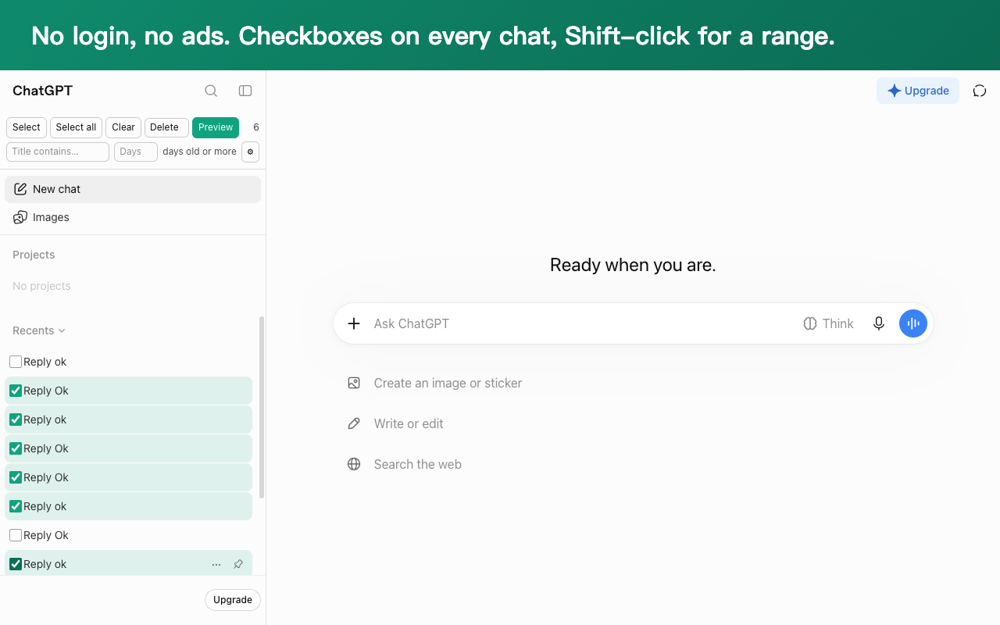
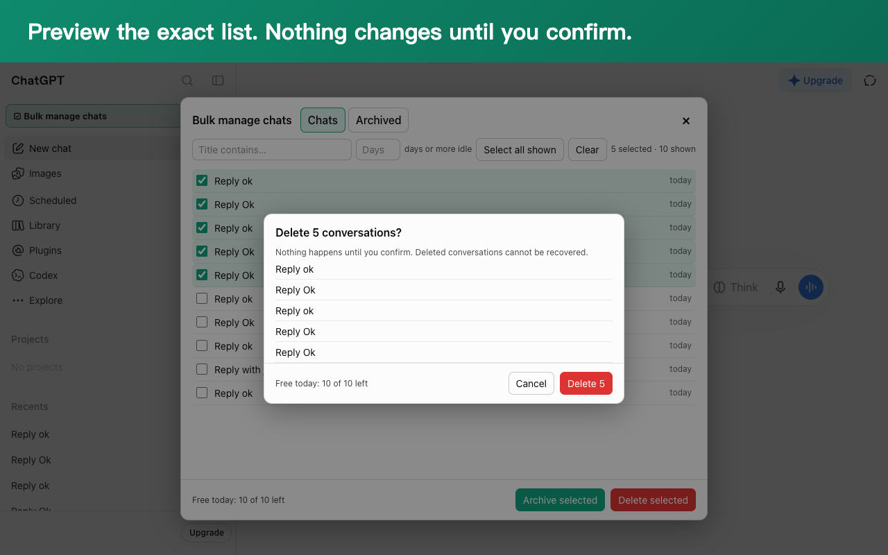

How to delete multiple ChatGPT chats at once
ChatGPT lets you delete one chat at a time, or every chat you have. There is no built-in way to pick 50 old chats and delete just those. Here are your options and which one fits.
- Delete one chat: click ••• next to it in the sidebar, then Delete.
- Delete every chat: Settings › Data controls › Delete all chats. Permanent, and it includes chats in projects.
- Hide every chat but keep it: Settings › Data controls › Archive all chats.
- Delete some chats, not all: ChatGPT can't do this yet. Use a browser extension such as Bits Sweep.
1. Delete chats one at a time (built in)
- Open ChatGPT and find the chat in the sidebar.
- Click the ••• menu next to it.
- Click Delete, then confirm.
On the phone app, press and hold the chat title, then tap Delete. To archive instead, pick Archive from the same menu; it needs no confirmation.
Good for: a handful of chats. With 300 chats it means 300 menus and 300 confirmations, and the sidebar only loads more chats as you scroll.
2. Delete all chats (built in)
- Open your profile menu, then Settings.
- Go to Data controls.
- Click Delete all chats, read the confirmation and continue.
Read this before you press it. According to OpenAI's help center:
- It cannot be undone. A deleted chat cannot be restored in ChatGPT or through OpenAI Support.
- It affects chats in your current account or workspace, including chats in projects.
- Files saved separately in your Library are not deleted, and a saved memory created from a chat is not necessarily deleted with it.
Good for: a true fresh start, when there is nothing in your history you want to keep.
3. Archive all chats, then bring some back (built in)
Archiving hides chats from the sidebar but keeps them, and archived chats stay searchable. It is the safe choice if you are not sure.
- Settings › Data controls › Archive all chats.
- To bring a chat back: Settings › Data controls › Archived chats (select Manage if you see it), then Unarchive next to the chat.
A common workaround is to archive everything and unarchive the few you want to keep. It works if you keep only a handful. OpenAI's help center only describes unarchiving one chat at a time, so it gets slow if you want to keep many.
Good for: a clean sidebar without losing anything.
4. Pick exactly which chats to delete (extension)
If you want to delete some chats (everything older than 90 days, or every chat titled "Translate…") and keep the rest, you need a browser extension. People have asked OpenAI for checkboxes on the community forum since March 2024, and were still asking in October 2026.
Here is how it works with Bits Sweep, the extension we make:
- Add Bits Sweep to Chrome on your computer.
- Open chatgpt.com and click Bulk manage chats at the top of the sidebar. A panel lists your whole history, including chats the sidebar hasn't loaded yet and chats in projects.
- Narrow the list: type a word into Title contains…, and/or a number into days or more idle (try 90).
- Click Select all shown, or tick chats one by one. Shift-click selects a range.
- Click Delete selected (or Archive selected). A preview lists every chat that will change. Nothing happens until you press Delete there.


The Archived tab works the same way, so you can also unarchive or delete archived chats in bulk. On our test account it handled about 6 chats per second, so 1,000 chats take around 3 minutes. Keep the tab open while it runs; if the page closes, it offers to pick up where it left off.
Cost: free for 10 chats a day. Pro removes the limit for US$9.99, paid once. Limits: desktop Chrome only, not phones or the ChatGPT apps. It is an independent tool, not made or approved by OpenAI. It uses the same requests the ChatGPT website makes, and OpenAI could change or restrict that at any time. See the terms.
Good for: deleting or archiving a large, specific part of your history and keeping the rest.
Which option should you use?
| You want to… | Use | Can you undo it? | Cost |
|---|---|---|---|
| Delete a few chats | One at a time (••• › Delete) | No | Free |
| Delete everything | Settings › Data controls › Delete all chats | No | Free |
| Clear the sidebar but keep everything | Settings › Data controls › Archive all chats | Yes | Free |
| Delete or archive only some chats, by age or title | An extension such as Bits Sweep | Archive: yes. Delete: no | Bits Sweep: free for 10 a day, US$9.99 once for no limit |
Before you delete anything
- Archive if you are unsure. Deleted chats cannot be recovered; archived ones can.
- Memory and files are separate. Deleting a chat does not necessarily delete what ChatGPT remembers from it, or files in your Library. Check those on their own.
- Want a copy first? Settings › Data controls › Export data. ChatGPT sends a download link by email or SMS, and it can take up to 7 days, so start it before you delete.
FAQ
Can I select multiple chats in ChatGPT and delete them? Not with ChatGPT's built-in tools (checked November 2026). You can delete one chat at a time or all chats at once. To delete a selection, use an extension.
Can I recover deleted ChatGPT chats? No. OpenAI says deleting is permanent and a deleted chat cannot be restored in ChatGPT or through OpenAI Support.
Does "Delete all chats" also delete chats in projects? Yes, according to OpenAI's help center.
Does deleting a chat delete ChatGPT's memory of it? Not necessarily. Saved memories and Library files are managed separately.
Is it safe to use an extension for this? Check what it can access before installing. Bits Sweep runs inside your own signed-in ChatGPT tab, its only browser permission is storage, and it sends nothing to us. More in how it works and the privacy policy.
Sources
- OpenAI Help Center, Deleting and archiving chats in ChatGPT and How do I export my ChatGPT history and data? (read November 23, 2026).
- OpenAI Community, Mass Chat Deletion Feature (March 2024) and Select and Bulk Delete Multiple ChatGPT Conversations (October 2026).